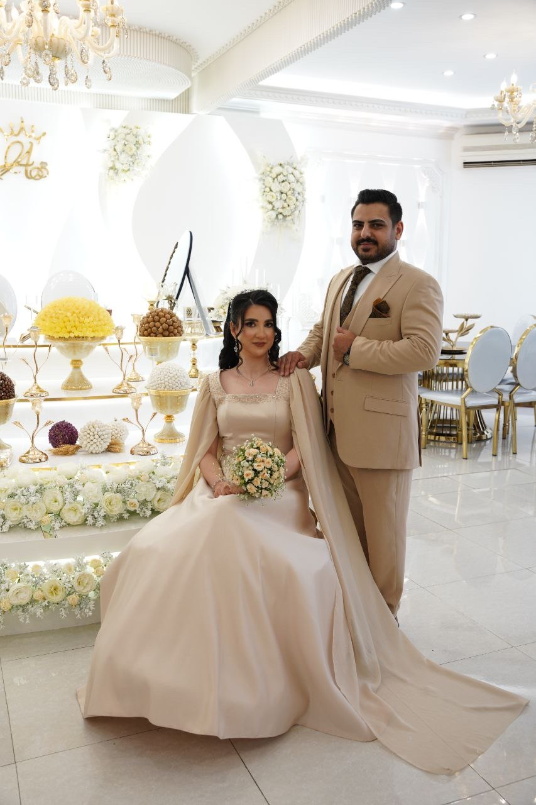

«عشق آمد و شد چو خونم اندر رگ و پوست
تا کرد مرا تهی و پر کرد ز دوست»
در شب وصال،
آغاز فصل جاودانگی ما را
در کنارمان باشید ✨

📍 باغ تالار پارادایس پرنس
اتوبان خلیج فارس – ۵ کیلومتر بعد از شهر آفتاب – جهان آباد پایین
🗓 ۱۲ اسفند ۱۴۰۴
⏰ ساعت ۱۹:۰۰
مسیریابی آنلاین
Google Maps
Waze
نشان
بلد